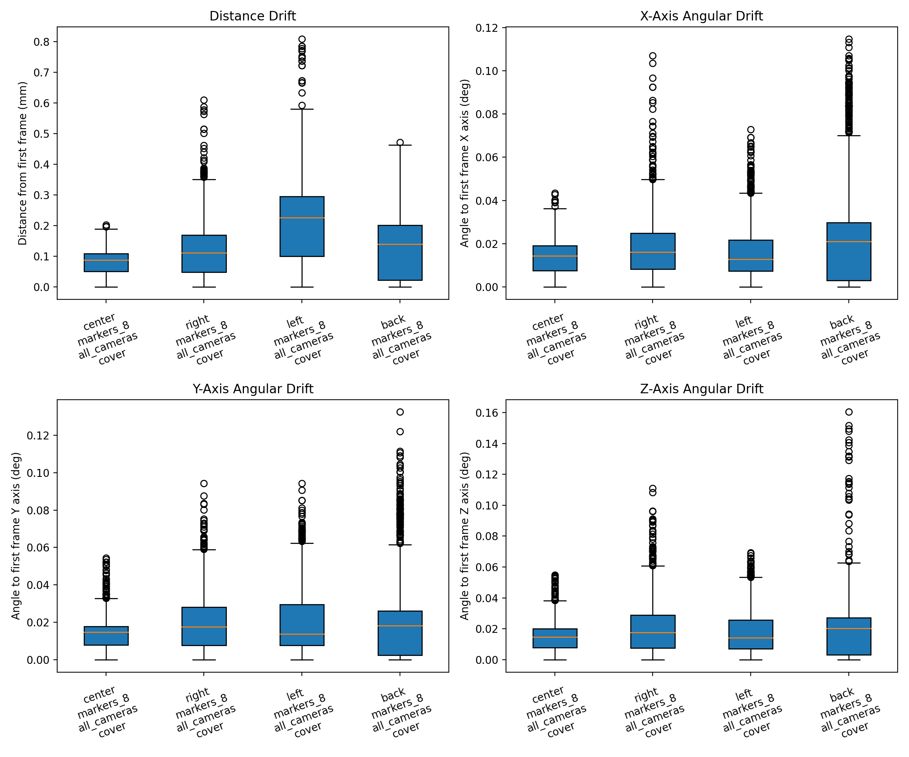
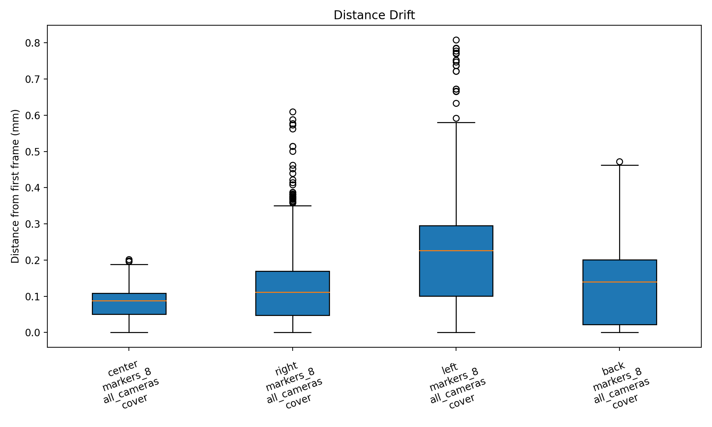
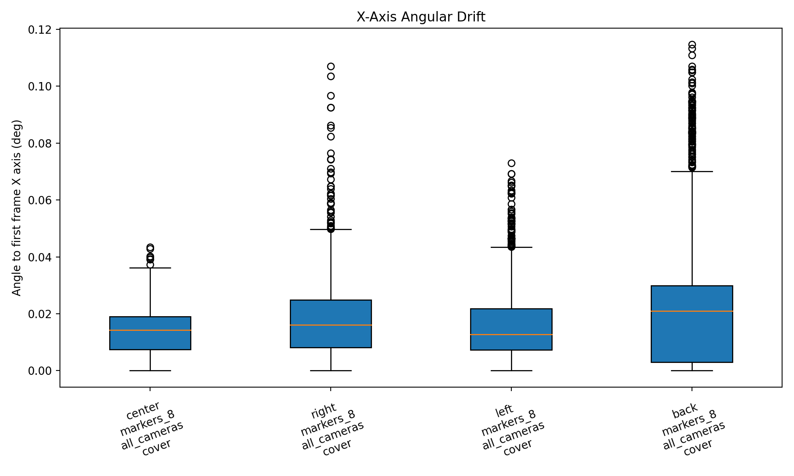
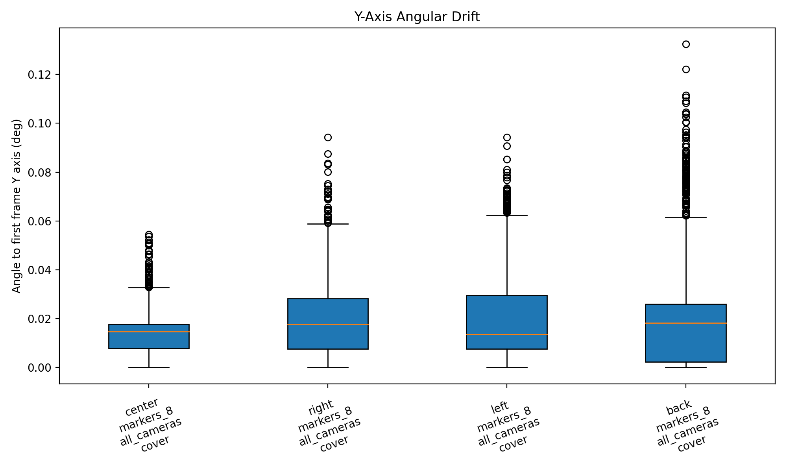
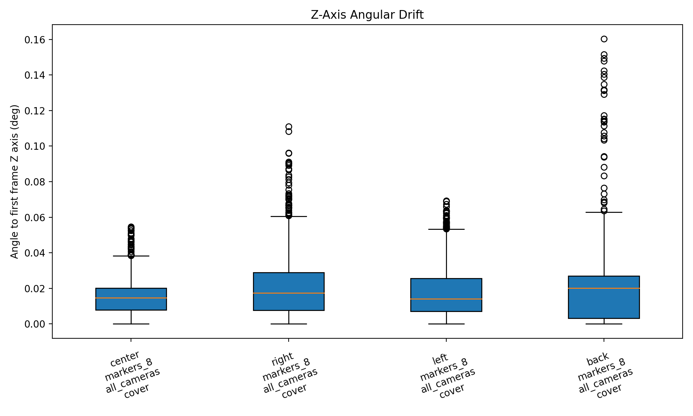
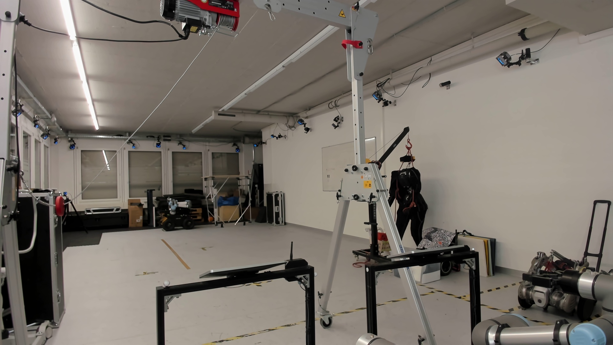
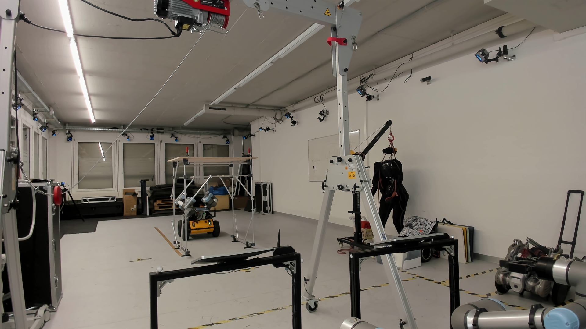
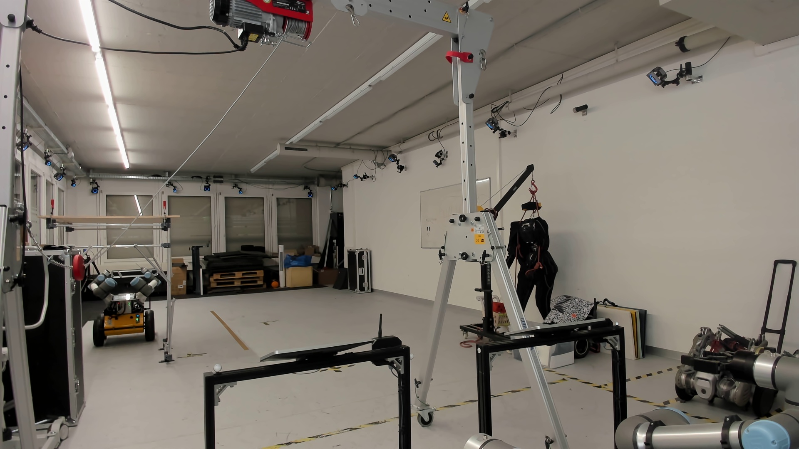
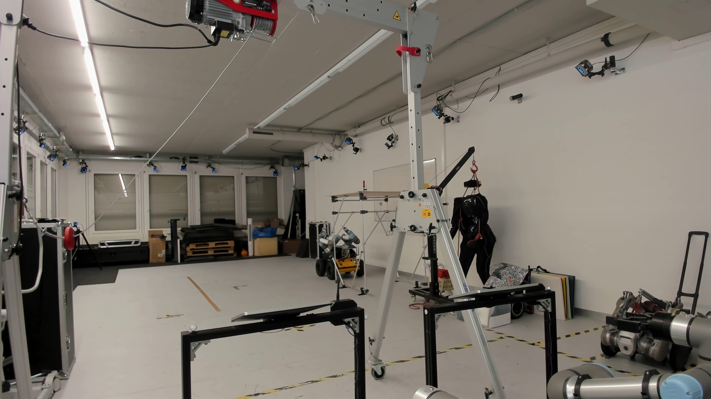

2026-03-13T15:20:22.317961take.workspace_position, take.marker_configuration, take.camera_configuration, take.cover_configuration44




| Group | Takes | Frames | Distance median (mm) | Distance p95 (mm) | X median (deg) | Y median (deg) | Z median (deg) |
|---|---|---|---|---|---|---|---|
| back / markers_8 / all_cameras / cover | 1 | 2101 | 0.139 | 0.309 | 0.021 | 0.018 | 0.020 |
| center / markers_8 / all_cameras / cover | 1 | 2101 | 0.088 | 0.144 | 0.014 | 0.015 | 0.015 |
| left / markers_8 / all_cameras / cover | 1 | 2102 | 0.226 | 0.425 | 0.013 | 0.014 | 0.014 |
| right / markers_8 / all_cameras / cover | 1 | 2100 | 0.111 | 0.285 | 0.016 | 0.018 | 0.017 |
21PrimeX 22 #72657PrimeX 22 #72653PrimeX 22 #72654PrimeX 22 #72652PrimeX 22 #72317PrimeX 22 #72655PrimeX 22 #72300PrimeX 22 #72708PrimeX 22 #72656PrimeX 22 #72318Prime 13 #31328PrimeX 13 #66106Prime 13 #31323Prime 13 #31327PrimeX 13 #66078Prime 13 #31326Prime 13 #31325PrimeX 13 #66077PrimeX 13 #66105Prime 13 #31324Prime 13 #3132921PrimeX 22 #72657PrimeX 22 #72653PrimeX 22 #72654PrimeX 22 #72652PrimeX 22 #72317PrimeX 22 #72655PrimeX 22 #72300PrimeX 22 #72708PrimeX 22 #72656PrimeX 22 #72318Prime 13 #31328PrimeX 13 #66106Prime 13 #31323Prime 13 #31327PrimeX 13 #66078Prime 13 #31326Prime 13 #31325PrimeX 13 #66077PrimeX 13 #66105Prime 13 #31324Prime 13 #3132921PrimeX 22 #72657PrimeX 22 #72653PrimeX 22 #72654PrimeX 22 #72652PrimeX 22 #72317PrimeX 22 #72655PrimeX 22 #72300PrimeX 22 #72708PrimeX 22 #72656PrimeX 22 #72318Prime 13 #31328PrimeX 13 #66106Prime 13 #31323Prime 13 #31327PrimeX 13 #66078Prime 13 #31326Prime 13 #31325PrimeX 13 #66077PrimeX 13 #66105Prime 13 #31324Prime 13 #3132921PrimeX 22 #72657PrimeX 22 #72653PrimeX 22 #72654PrimeX 22 #72652PrimeX 22 #72317PrimeX 22 #72655PrimeX 22 #72300PrimeX 22 #72708PrimeX 22 #72656PrimeX 22 #72318Prime 13 #31328PrimeX 13 #66106Prime 13 #31323Prime 13 #31327PrimeX 13 #66078Prime 13 #31326Prime 13 #31325PrimeX 13 #66077PrimeX 13 #66105Prime 13 #31324Prime 13 #31329Workspace

Workspace

Workspace

Workspace

created710.5 sec../reference_media/20260313_142414_ws_center_markers8_allcameras_cover_take1--center--markers_8--all_cameras--cover--take1/workspace_timelapse.mp4created710.5 sec../reference_media/20260313_143031_ws_right_markers8_allcameras_cover_take1--right--markers_8--all_cameras--cover--take1/workspace_timelapse.mp4created710.5 sec../reference_media/20260313_143313_ws_left_markers8_allcameras_cover_take1--left--markers_8--all_cameras--cover--take1/workspace_timelapse.mp4created710.5 sec../reference_media/20260313_143628_ws_back_markers8_allcameras_cover_take1--back--markers_8--all_cameras--cover--take1/workspace_timelapse.mp4ws_center_markers8_allcameras_cover_take1 | center | markers_8 | all_cameras | cover | take1: /home/yijiangh/ros2_ws/src/husky-assembly-teleop/data/mocap_experiments/20260313/20260313_cover_study/takes/20260313_142414_ws_center_markers8_allcameras_cover_take1--center--markers_8--all_cameras--cover--take1.json (2101 frames)workspace: ../photo_library/ws_center_markers8_allcameras_cover_take1__workspace.jpgws_right_markers8_allcameras_cover_take1 | right | markers_8 | all_cameras | cover | take1: /home/yijiangh/ros2_ws/src/husky-assembly-teleop/data/mocap_experiments/20260313/20260313_cover_study/takes/20260313_143031_ws_right_markers8_allcameras_cover_take1--right--markers_8--all_cameras--cover--take1.json (2100 frames)workspace: ../photo_library/ws_right_markers8_allcameras_cover_take1__workspace.jpgws_left_markers8_allcameras_cover_take1 | left | markers_8 | all_cameras | cover | take1: /home/yijiangh/ros2_ws/src/husky-assembly-teleop/data/mocap_experiments/20260313/20260313_cover_study/takes/20260313_143313_ws_left_markers8_allcameras_cover_take1--left--markers_8--all_cameras--cover--take1.json (2102 frames)workspace: ../photo_library/ws_left_markers8_allcameras_cover_take1__workspace.jpgws_back_markers8_allcameras_cover_take1 | back | markers_8 | all_cameras | cover | take1: /home/yijiangh/ros2_ws/src/husky-assembly-teleop/data/mocap_experiments/20260313/20260313_cover_study/takes/20260313_143628_ws_back_markers8_allcameras_cover_take1--back--markers_8--all_cameras--cover--take1.json (2101 frames)workspace: ../photo_library/ws_back_markers8_allcameras_cover_take1__workspace.jpg